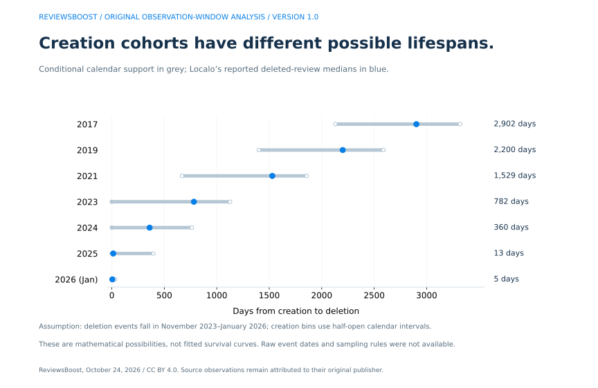
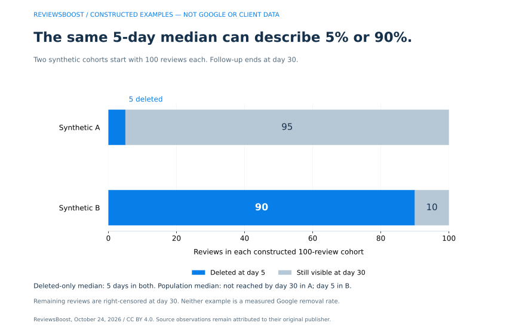
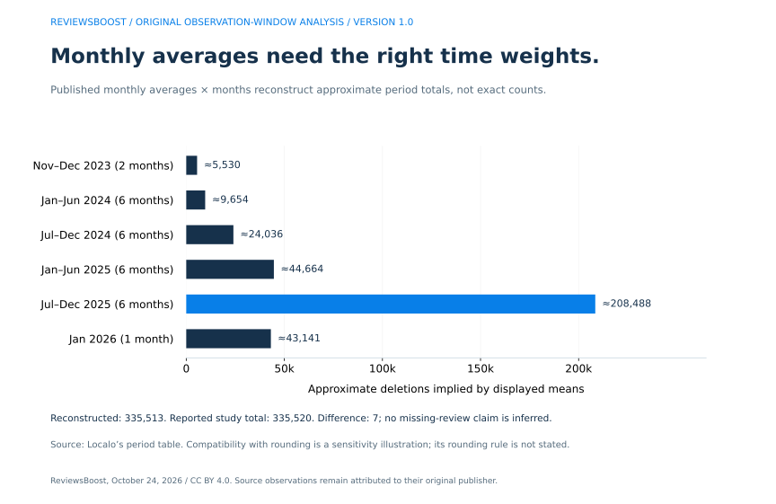

How long does Google review removal take?
A published median age among deleted reviews is not a deadline for your report. Google says review evaluation typically takes several days, but an initial assessment and an appeal are separate steps. Check the current case status and the facts of the review rather than treating a deletion-age statistic as a completion promise. Google’s reporting and appeal guidance.
We examine an overlooked question behind fast-removal headlines: what ages could the dataset have contained in the first place? Our analysis combines attributed public aggregates with original calendar calculations, a weighted-volume check and two explicitly synthetic examples.
The source is Localo’s May 2026 review-velocity study. It describes a 27-month tracking period and defines lifespan from review creation to removal. We use seven published creation-year rows and six period averages, not private review-level records. The source observations belong to Localo; the conditional calculations and examples below are ReviewsBoost’s work.
Four new results from our analysis
- Calendar windows can constrain the comparison before any algorithm is considered. Under the stated deletion-window model, a 2017 review can only contribute a lifespan greater than 2,130 days; a January 2026 review must contribute less than 31 days.
- A five-day deleted-only median can coexist with very different outcomes. Our constructed examples have the same five-day median among deletions, but 5% versus 90% of their starting reviews disappear during follow-up.
- The period averages almost reconcile, but they should not be treated as exact counts. Duration weighting reconstructs 335,513 deletions from the published means, seven below the stated study total.
- Not reaching a median is useful information. When most reviews remain visible at the follow-up cutoff, a population deletion median has not yet been observed. Omitting those reviews changes the question.
These are mathematical and arithmetic findings with explicit conditions. They do not reproduce the publisher’s internal pipeline, establish a Canadian removal time, or prove that Google’s detection has or has not improved.
Three clocks that should not be mixed
| Measure | Starts at | Ends at | Useful for |
|---|---|---|---|
| Review lifespan | Review creation | Observed removal | Describing the age of content that disappeared |
| Report processing | Business or user report | Initial decision | Tracking the handling of a report |
| Appeal processing | Eligible appeal submission | Appeal decision | Tracking a challenge to an earlier decision |
A review could be years old when first reported. Its creation-to-deletion age could therefore be very long even if a later report is handled promptly. Conversely, a new review could disappear without any business-owner report. Neither observation alone supplies report-processing time.
For a removal service, the case record should identify the relevant starting event. Price and service terms should also state which review is included and how the outcome is confirmed.
What the observation window permits
We make a conditional model explicit: suppose the deletion events represented by the source’s cohort table fall within its stated November 2023–January 2026 tracking period. We represent that span as November 1, 2023 inclusive to February 1, 2026 exclusive. Creation-year bins use the same half-open convention; January 2026 is a one-month bin.
The public aggregates do not independently verify the event timestamps or all sampling-inclusion rules. The calculated intervals are therefore a sensitivity analysis under that interpretation, not an assertion that we have reconstructed the raw dataset.
| Creation cohort | Source count | Reported median age | Conditional lower limit | Conditional upper limit |
|---|---|---|---|---|
| 2017 | 336 | 2,902 days | >2,130 days | <3,318 days |
| 2019 | 1,167 | 2,200 days | >1,400 days | <2,588 days |
| 2021 | 1,735 | 1,529 days | >669 days | <1,857 days |
| 2023 | 5,212 | 782 days | 0 days, inclusive | <1,127 days |
| 2024 | 10,617 | 360 days | 0 days, inclusive | <762 days |
| 2025 | 29,384 | 13 days | 0 days, inclusive | <396 days |
| 2026 (Jan) | 2,450 | 5 days | 0 days, inclusive | <31 days |



For 2017, even a review created just before 2018 begins would already be more than 2,130 days old at the model’s observation start. For January 2026, even a review created at the beginning of the month cannot reach 31 elapsed days before the model ends. Those two creation cohorts do not have the same set of possible ages.
This is why a ratio of older and newer deleted-review medians is descriptive, but not by itself an estimate of how much faster a detection system has become. To separate a calendar constraint from a genuine change in performance, researchers need comparable follow-up and clearly defined inclusion rules.
Why we use a 31-day model flag, not a substitute 30-day result
January has 31 calendar days. With exact timestamps, an event can occur after 30 elapsed days and still before the end of that month. Our “less than 31 days” bound is therefore not equivalent to “within 30 days.” The downloadable dataset retains the publisher’s 30-day field separately from our 31-day model classification.
Under the model, the 2017, 2019 and 2021 bins cannot contain a deletion within 31 days of creation. The January 2026 bin cannot contain a lifespan reaching 31 days. The other selected bins can fall on either side. This establishes a difference in available follow-up, not an exact correction to any published percentage.
We have not estimated what the medians would be with equal observation windows, or how many review outcomes would change in a matched comparison. That would require the underlying events and appropriate still-visible observations.
The same five-day median, two different starting populations
Consider two constructed cohorts, each beginning with 100 reviews on day zero. In A, five are deleted on day five and 95 remain visible when observation ends on day 30. In B, 90 are deleted on day five and ten remain visible at the cutoff.
| Synthetic cohort | Starting reviews | Deleted at day 5 | Still visible at day 30 | Deleted-only median | Population median |
|---|---|---|---|---|---|
| A | 100 | 5 | 95 | 5 days | Not reached by day 30 |
| B | 100 | 90 | 10 | 5 days | Day 5 |



Both deleted-only medians are five days. Yet A has not reached a population median deletion time during follow-up, while B reaches it on day five. The difference is not a rounding error: the deleted-only statistic has discarded different numbers of reviews that remain visible.
NIST’s statistical handbook explains right-censored observations: when observation ends before every event occurs, the uncompleted observations still carry information. Applying that principle to reviews requires recording when tracking starts and ends, rather than pretending that every still-visible review has an observed deletion time.
A provider’s completed removals create a similar reporting issue. A median among successful cases should be labelled as such and accompanied by the case definition, follow-up cutoff and unresolved-case count. It should not silently stand in for the experience of every client request.
A second check: weight monthly averages by duration
The source also publishes average monthly deletion counts for periods of different lengths. Treating a one-month period and a six-month period as equally weighted would distort a reconstruction. We multiply each displayed mean by its month count.
| Period | Months | Displayed monthly average | Mean × months |
|---|---|---|---|
| Late 2023 (Nov-Dec) | 2 | 2,765 | ≈5,530 |
| H1 2024 (Jan-Jun) | 6 | 1,609 | ≈9,654 |
| H2 2024 (Jul-Dec) | 6 | 4,006 | ≈24,036 |
| H1 2025 (Jan-Jun) | 6 | 7,444 | ≈44,664 |
| H2 2025 (Jul-Dec) | 6 | 34,748 | ≈208,488 |
| Jan 2026 | 1 | 43,141 | ≈43,141 |



The sum is 335,513, compared with the reported 335,520. That seven-review residual does not establish missing records or a source error. It is compatible with rounding the monthly averages.
For a sensitivity check only, suppose each displayed monthly mean was rounded to the nearest integer. Multiplying its possible error by the period length gives an aggregate range from 335,499.5 inclusive to 335,526.5 exclusive. The reported total falls inside that range. The publication does not specify its rounding algorithm, so this is a compatibility example, not a recovered rounding rule.
The creation-cohort and period tables concern different selections. We do not allocate a period’s volume to a creation-year bin, average subgroup medians, or infer a detection trend from the reconstructed totals alone.
What a Canadian business should ask about removal timing
A Toronto retailer or a Vancouver service business needs a case-specific reporting plan. The research here does not supply a separate Canadian sample, a provincial processing time or a removal probability.
- Ask which clock is being quoted. Creation-to-removal age and report-to-decision time answer different questions.
- Ask what happened to unresolved cases. A successful-case median should not exclude the rest of the request cohort without saying so.
- Record separate case events. Keep the review URL, location, report date, decision, appeal and latest observed visibility together.
- Keep original text and relevant evidence. A report should identify the specific concern rather than rely on an aggregate statistic.
Use our Google review evidence builder and reporting guide to organize the facts. Our blank outcome ledger provides a starting record, and our Google review removal service in Canada offers managed assistance. The public timing analysis does not verify our own delivery timeline.
Questions about Google review removal timing
Does a five-day median mean my reported review will be removed in five days?
No. A deleted-review age statistic does not measure your report’s processing time, establish eligibility or include every review that remains visible.
Does this analysis prove Google is not getting faster?
No. It identifies a calendar constraint and a selection issue. Without comparable event-level data, it cannot isolate or rule out a genuine change in detection speed.
Why can a review with no text still appear in timing research?
A star-only contribution has a creation time and can have an observed removal. Its timing does not establish why action occurred. The selected source cohorts concern five-star, no-text deleted reviews; they are not a random sample of disputed one-star reviews.
Can we calculate a survival curve from the published medians?
Not from these aggregates alone. A suitable analysis needs the events, follow-up information and observations without an event. We publish conditional calendar support, not a fitted Kaplan–Meier estimate.
Method, originality and limitations
- Capture the two public source tables and check the publication’s metric definitions. Preserve the original creation-year labels, counts, medians and reported 30-day percentages.
- Calculate conditional support from half-open creation and observation intervals. Keep strict boundaries explicit, including the distinction between fewer than 31 and at most 30 elapsed days.
- Weight six monthly-average rows by their period lengths. Reconcile the approximate total and test the stated rounding model without asserting the publisher uses that rule.
- Construct two separate 100-review examples to demonstrate why a deleted-only median does not identify a full-cohort outcome. Mark both as synthetic in every output.
- Publish the inputs, derived columns, assumptions and audit script so that readers can check or revise the analysis.
Our new dataset contains seven source-cohort rows with derived calendar fields, six source-period rows with weighted totals, and two synthetic scenario rows. The modelled examples are not additional platform observations. Missing creation years are not filled in, and selected counts are not represented as a complete annual review population.
This is secondary analysis of a publisher’s aggregates. We did not obtain raw timestamps, independently establish why reviews disappeared, inspect Google’s moderation system or measure ReviewsBoost client outcomes. An observation-window interpretation is an assumption to test, not a substitute for the original sampling protocol.
Commercial interest: ReviewsBoost provides review-removal and reputation-management services. The article does not establish a service success rate or a search-ranking effect. Our original contribution is the structured conditional analysis and illustrations, not ownership of Localo’s observations or NIST’s statistical methods.
Download the data, graphs and citation files
- Seven source cohorts and conditional bounds, CSV · Cohort column definitions.
- Six period averages and weighted totals, CSV · Period column definitions.
- Two explicitly synthetic scenarios, CSV · Synthetic scenario column definitions.
- Combined analysis, assumptions and provenance, JSON · Checked source values and capture fingerprint.
- Dataset builder · Independent arithmetic, calendar and CSV audit · Three-figure reproduction script. Optional live-source check (Puppeteer and Chrome).
- BibTeX citation · Citation File Format metadata.
Put the source input JSON and builder in one folder and run python build-google-removal-time-data.py, then node audit-google-removal-time-data.mjs. The plotting script requires Matplotlib and the generated JSON. The audit checks captured source files when the local cache is available; the website does not redistribute that full-page source capture.
ReviewsBoost Editorial Team. (2026, October 24). Google review removal time: an observation-window sensitivity analysis (Version 1.0). Permanent article and dataset reference. Attribute observed aggregates to Localo and retain the conditional and synthetic labels.
Our original compilation, calculations and figures are available under CC BY 4.0. Link this research and the licence, identify ReviewsBoost and note any changes. Original source material retains its own rights. Send corrections through our editorial correction process.
Sources checked October 24, 2026
- Localo, Buying Google Reviews Doesn’t Work: Review Velocity Study, published May 29, 2026. Source tables and methodology, including creation-to-removal definition and tracking period.
- NIST/SEMATECH e-Handbook of Statistical Methods: censoring. Statistical background on incomplete event observations; not a validation of our conditional review dataset.
- Google Business Profile: reporting inappropriate reviews. Current reporting, status and eligible appeal guidance.